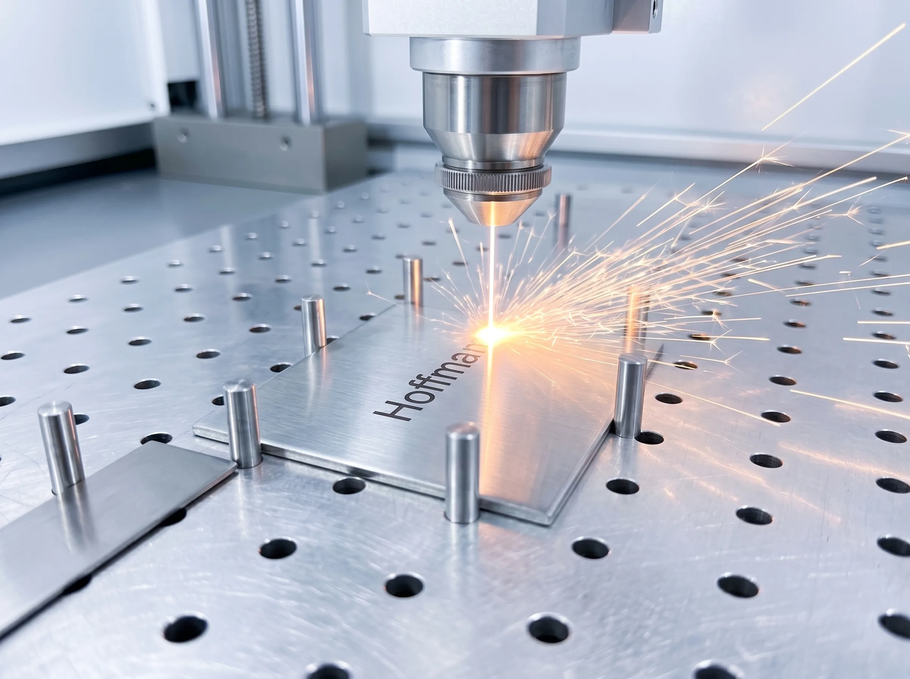

Jedes Produkt entsteht erst, wenn Sie es bestellen – graviert mit Ihrem Namen, von Hand montiert und Stück für Stück geprüft. Genau diese Sorgfalt ist der Grund, warum Ihr Eingang auch Jahre später noch wie neu aussieht.
Hinter den Kulissen
Die Werkstatt in Bewegung
Ein Blick in unsere Werkstatt in Reutlingen – der Ort, an dem Ihr Produkt gerade entsteht.
0:00
0:00/0:00
Der Weg Ihres Produkts
Unsere Fertigung, Schritt für Schritt
Von der Konstruktion bis zum Versand behalten wir jeden Schritt in der Hand – geprüft und freigegeben, bevor der nächste beginnt. Das braucht Sorgfalt und die nötige Zeit.
MetzlerFertigung
Konstruktion
Schritt 01 · Konstruktion
Entwickeltvon unseren Konstrukteuren
Unsere Produkte entstehen zuerst am Rechner – wir planen Form, Aufbau und Material so, dass alles zusammenpasst und dauerhaft hält. Konstruktion, Technik und Design arbeiten dabei Hand in Hand. Schon in dieser Phase legen wir jeden folgenden Produktionsschritt fest.
Veredelung
Schritt 02 · Zuschnitt & Veredelung
Zugeschnittenund veredelt
Die einzelnen Teile werden zugeschnitten und je nach Produkt veredelt – zum Beispiel in nahezu jeder RAL-Farbe pulverbeschichtet. So erhält jedes Produkt seinen Schutz und eine Oberfläche, die lange hält.

Gravur
Schritt 03 · Gravur
DauerhafteLasergravur
Ist eine Gravur gewünscht, arbeiten wir Ihren Text per Laser dauerhaft ins Metall ein – nicht aufgedruckt, sondern eingraviert. Jede Vorlage prüfen wir vorher. Graviert wird erst nach der Freigabe.
Montage
Schritt 04 · Montage
Von Handmontiert
Jetzt fügen wir die einzelnen Teile von Hand zu Ihrem fertigen Produkt zusammen – jedes Element sitzt genau dort, wo es hingehört. Aus vielen Teilen entsteht so ein stimmiges Ganzes.
Endkontrolle
Schritt 05 · Endkontrolle
Geprüft imVier-Augen-Prinzip
Vor dem Versand prüfen wir jedes Produkt auf Verarbeitung, Funktion und Vollständigkeit. Die Kontrolle erfolgt im Vier-Augen-Prinzip. Erst wenn alles einwandfrei ist, geben wir es in die Versandabteilung.
Versand
Schritt 06 · Versand
Sicher verpacktund auf dem Weg
Vor dem Versand verpacken wir Ihr Produkt so, dass es gegen Kratzer und Stöße geschützt ist. Zu jeder Bestellung erhalten Sie eine Sendungsnummer und können die Lieferung jederzeit nachverfolgen.
Was Kunden sagen
Qualität, die man spürt
Ausgewählte Stimmen von Menschen, die genau das schätzen, wofür wir uns die Zeit nehmen.
FH
Familie Hofmann
„Briefkasten nach acht Jahren immer noch wie am ersten Tag. Kein Rost, keine Verfärbung. Die Gravur ist makellos – würde sofort wieder bei Metzler bestellen."
vor 22 Stunden
AG
A. Gienger
„Ich vergleiche viel – kein anderer Hersteller in Deutschland kombiniert Material, Verarbeitung und Service auf diesem Niveau. Den Preis ist es wert."
vor 2 Tagen
LK
L. Krämer
„Schneller Versand, makellose Verarbeitung und persönliche Beratung am Telefon. Genau so muss Service aussehen. Klare Empfehlung."
vor 3 Tagen
Häufige Fragen
Warum Lasergravur statt Aufdruck?
Die Gravur wird per Laser materialtief in die Oberfläche eingebrannt – nicht aufgedruckt oder aufgeklebt. So ist sie wisch- und wetterfest, verblasst nicht und bleibt auch nach Jahren im Außenbereich gestochen scharf. Namen, Hausnummern und Motive setzen wir damit dauerhaft und randscharf um.
Wie läuft eine individuelle Gravur ab?
Jede Gravur fertigen wir individuell für Sie – und sehr zügig. Vor der Fertigung erhalten Sie ein digitales Korrekturmuster zur Freigabe, damit Schrift, Ziffern und Position genau stimmen.
Wie stellen Sie sicher, dass mein Produkt einwandfrei ankommt?
Vor dem Verpacken durchläuft jedes Produkt eine Endabnahme nach dem Vier-Augen-Prinzip: Gravur, Oberfläche, Vollständigkeit und Funktion werden Punkt für Punkt kontrolliert. Erst wenn eine zweite Person alles freigibt, geht Ihr Stück auf die Reise – was bei uns durchfällt, erreicht Sie gar nicht erst.
Kann ich Klingel, Briefkasten & Co. selbst montieren?
Ja – die meisten unserer Produkte sind für die Selbstmontage ausgelegt. Briefkästen und Hausnummern lassen sich in der Regel selbst anbringen. Den elektrischen Anschluss von Sprechanlagen wie der XDM10 sollte eine Elektrofachkraft übernehmen. Bei Fragen zur Montage hilft Ihnen unsere Hotline Mo–Fr gerne weiter.
Wie sind Versand und Rückgabe geregelt?
Versand mit DHL und DPD GoGreen, kostenlos ab 99 € Bestellwert innerhalb DE. Rückgabe innerhalb von 30 Tagen – auch für individuell gravierte Produkte (gegen 15 % Bearbeitungspauschale). Kauf auf Rechnung über Klarna verfügbar.
Sortiment entdecken
Sprechanlagen & Video-Türklingeln, Briefkästen, Hausnummern, Paketboxen und Gartenprodukte – alle mit der gleichen Sorgfalt.